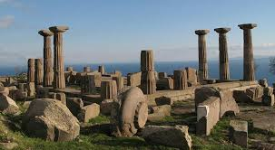
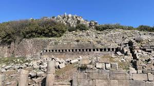

Tarih boyunca Lidya, Pers, Pergamon¸ Roma egemenliği altına giren bölge Orta Çağ'da terk edilmiş; 1880-1883 yıllarında Amerikan Arkeoloji Enstitüsü'nün yaptığı kazılar sırasında Amerikalı genç mimar Francis H. Bacon tarafından bulunmuştur.


 "Çanakkale"ye dönmek için basın
"Çanakkale"ye dönmek için basın